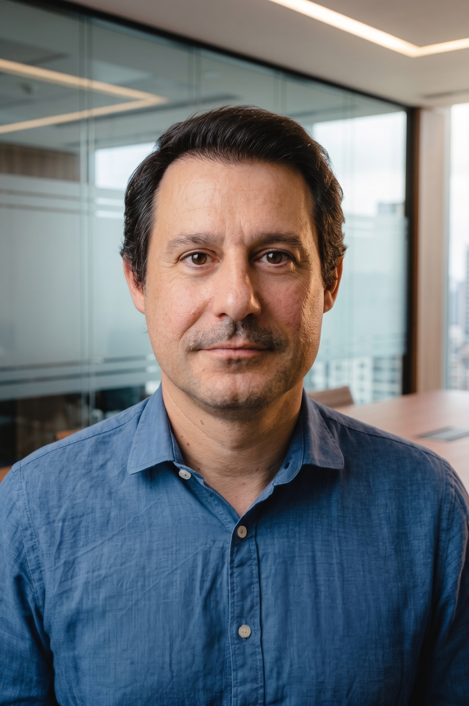

Senior Lecturer in Biomechanics
Metropolitan College, in collaboration with University of East London
Biomechanics | Gait Analysis | Ontology Engineer | Prompt Engineer | AI | Recurrent Neural Networks
Posted on March 31, 2026
As part of my work as a trainer for the Institute of Educational Policy (IEP) in the Sub8 programme, I developed an integrated digital resource for Physical Education in primary school. My aim was to create something directly useful for fellow teachers, rather than another theoretical document that remains unread or unused.
The central idea behind this material is closely aligned with the purpose of the new curricula: to improve students' physical and mental health, to support meaningful participation for all children, and to cultivate a lifelong relationship with exercise and active living. Within this framework, Physical Education in school needs to move away from narrow models based on championships, exclusion, and empty competition.
The resource was organised around issues that matter in the real Greek school context: clear lesson focus, playground and space organisation, meaningful participation, safety, concise and specific feedback, functional use of technology, and ready-to-use lesson ideas for Grades 1-2 and Grades 3-4 of primary school.
It also places particular emphasis on the practical conditions of everyday teaching: limited time, limited equipment, mixed-ability classes, and the need to keep students active rather than waiting. For that reason, the material focuses on functional lesson design, differentiated activities, effective playground management, and the use of technology only when it adds genuine pedagogical value.
The broader goal is simple but important: to support a model of Physical Education that is safer, clearer, more inclusive, and more directly connected to health, confidence, participation, and lifelong exercise. In this sense, the material is not simply a summary of training sessions, but a practical teaching tool designed for immediate use in school.
The full digital resource is available here: Physical Education in Primary School: Integrated Digital Resource
Also, as part of my work in the Sub8 programme, I also tried to create a small digital tool based on an educational scenario. It is called the Sub8 Gym Bot and it is available to all Physical Education colleagues here: https://sub8-gym-bot.streamlit.app/ The goal is simple: using TPACK in Physical Education. Feel free to use it.